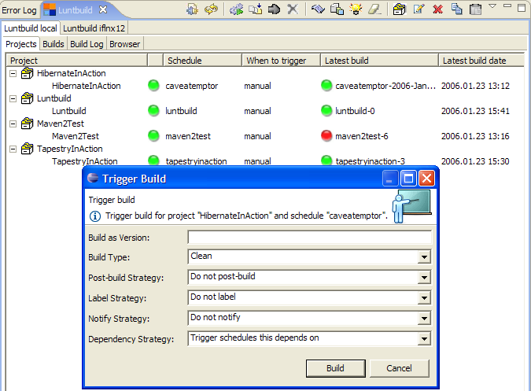
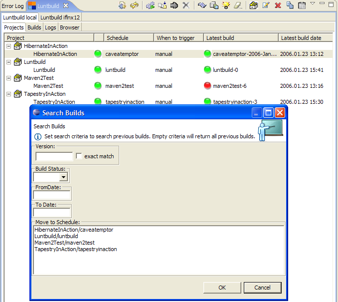

Projects tab displays all projects as a root of a tree viewer and projects latest builds a children of those projects.
You can select and edit projects by selecting a project, clicking on toolbar button or selecting Edit Project menu item from toolbar menu or popup menu.
You can trigger a build by selecting a build, clicking on toolbar button or selecting Trigger Build menu item from toolbar menu or popup menu:

You can view history (previous) builds by selecting a build, clicking on toolbar button or selecting Search builds... menu item from toolbar menu or popup menu:
